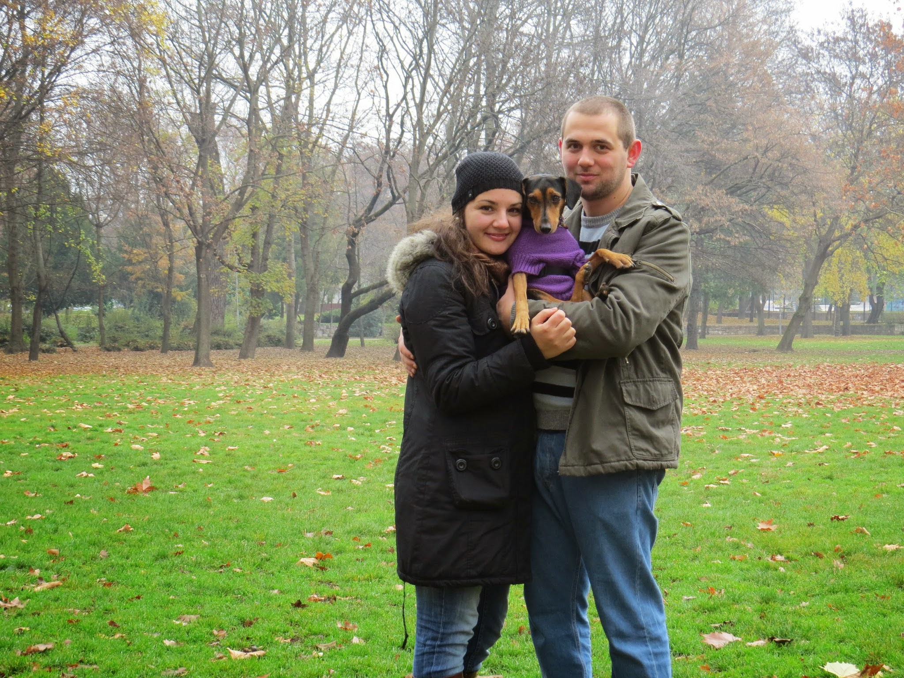

About Me
Hi there! I’m Sebastian Cachia, though most people just call me Seb. I was born and raised in the European island nation of Malta. I currently live in Budapest with my wife Marica and our dog Flora.

Professionally, I am a technology geek with a short attention span and a passion for learning. So far I have found Product Management to be the best fit, though I am also interested in Engineering Management and User Experience Design. I sometimes hack around in code, though mostly to serve my own needs (nothing production grade here).
I love being outdoors! I grew up (with my now wife) in Scouts and enjoy hiking, running, camping, or anything else I can find time for. I have been hiking in the Bavarian Alps, Snowdonia and the Black Mountains in Wales and climbed Kilimanjaro in Tanzania during our honeymoon. I also enjoy cooking, reading, strong coffee and travel.
This blog is mostly intended as a repository for posts tackling my professional interests, though I might occasionally deviate into any of my other current (or future) interests.
Getting in Touch
If you know me professionally, please connect to me on LinkedIn, if you know me personally, add me on Facebook. If we have never met, please connect on Twitter or send me a short email on me@thisdomain.com.